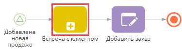

Элемент [Подпроцесс] (Рис. 162) используется для запуска бизнес-процесса из другого процесса.
Рис. 162 — Элемент [Подпроцесс] на диаграмме бизнес-процесса

Использование элемента [Подпроцесс] для запуска других процессов имеет свою специфику.
-
Значения параметров процесса могут передаваться из родительского процесса в подпроцесс и наоборот. Это означает, что вы можете запустить подпроцесс с определенными значениями параметров, которые после выполнения подпроцесса будут использованы в родительском процессе.
-
Элемент [Подпроцесс] активирует свои исходящие потоки только после выполнения соответствующего подпроцесса.
-
Если любой из параметров процесса сопоставлен с коллекцией данных, то отдельные экземпляры процесса будут запущены для обработки каждого элемента такой коллекции.
•Для каждого из входящих элементов коллекции будет запущен отдельный экземпляр подпроцесса.
•Элемент [Подпроцесс] возвращает коллекцию исходящих данных, наполненную исходящими и двунаправленными параметрами, возвращаемыми каждым экземпляром подпроцесса.
•Выполнение элемента [Подпроцесс] завершится, когда будут завершены все запущенные экземпляры подпроцесса.
Рекомендуем использовать подпроцессы, чтобы избежать создания громоздких диаграмм процессов, которые трудно использовать. Вдобавок, большие диаграммы процессов являются более ресурсоемкими. Элемент [Подпроцесс] также позволяет использовать процессы, уже существующие в Creatio. Например, можно использовать элемент [Подпроцесс] в процессе продаж, который включает этап “Встреча с клиентом”, существующий в виде отдельного бизнес-процесса в Creatio.
Использование элемента [Подпроцесс]
В зависимости от типа входящего параметра (обычный или коллекция) элемент [Подпроцесс] может запускать один или несколько экземпляров подпроцесса.
Запуск одного экземпляра подпроцесса
В случаях, когда ни один из параметров элемента [Подпроцесс] не сопоставлен с коллекцией данных, при выполнении элемента будет запущен один экземпляр процесса.
| Выполнение | После активации входящего потока элемент [Подпроцесс] активирует начальное событие [Простое] процесса, указанного в поле [Какой процесс запустить] панели настроек элемента [Подпроцесс]. В результате актуальная версия подпроцесса запускается как отдельный независимый экземпляр процесса. Если в блоке [Параметры процесса] панели настроек элемента [Подпроцесс] заполнены какие-то параметры, то процесс будет запущен со значениями таких параметров. Если в актуальную версию подпроцесса вносятся изменения после того, как начал выполняться элемент [Подпроцесс], то выполнится версия подпроцесса, актуальная на момент активации элемента. Новая версия подпроцесса запустится при следующем выполнении элемента [Подпроцесс]. Обратите внимание, что подпроцесс отображается в разделе [Журнал процессов] как отдельный экземпляр, а все шаги подпроцесса отображаются на детали [Элементы процесса] этого экземпляра в порядке их выполнения. На странице родительского процесса весь подпроцесс отображается как один из элементов на детали [Элементы процесса]. |
| Завершение | Элемент [Подпроцесс] считается выполненным, когда соответствующий экземпляр подпроцесса завершает выполнение. После выполнения элемент [Подпроцесс] актуализирует значения своих параметров из соответствующих параметров выполненного экземпляра подпроцесса и активирует свои исходящие потоки. |
Последовательный запуск нескольких экземпляров подпроцесса
В случаях, когда хотя бы один из параметров элемента [Подпроцесс] сопоставлен с коллекцией данных, при выполнении элемента будут запущены несколько экземпляров процесса. Для подпроцессов, параметры которых сопоставлены с коллекциями данных, по умолчанию запуск экземпляров выполняется последовательно.
На заметку
Тип запуска процессов — параллельно или последовательно — указывается в поле [Режим выполнения]. Для элементов [Подпроцесс], не сопоставленных с коллекциями, это поле не отображается. Больше информации о настройке элемента [Подпроцесс] доступно в блоке “Настройки элемента [Подпроцесс]” этой статьи.
| Выполнение | После активации входящего потока элемент [Подпроцесс] начинает последовательную работу с данными коллекции. Для каждого из элементов в коллекции данных запускается новый экземпляр процесса, указанного в поле [Какой процесс запустить?] элемента [Подпроцесс] — активируется начальное событие [Простое] подпроцесса. В результате актуальная версия подпроцесса запускается как новый независимый экземпляр процесса последовательно для каждого из элементов коллекции. Подробнее читайте в статье “Работа с коллекциями данных”. Входящие и двунаправленные параметры подпроцесса (указанные в блоке [Параметры процесса] элемента [Подпроцесс]) могут сопоставляться либо с элементами процесса из той же коллекции данных, либо с элементами, не входящими в коллекцию. Параметры подпроцесса, которые не входят в коллекцию, будут использоваться во всех запущенных экземплярах процесса. Если в актуальную версию подпроцесса вносятся изменения после того, как начал выполняться элемент [Подпроцесс], то новая версия подпроцесса будет запущена для тех элементов коллекции, которые на момент сохранения новой версии находятся в очереди на запуск. Таким образом, для всех экземпляров подпроцесса и процессов, запущенных до обновления, будет использована версия, актуальная на момент запуска. Не рекомендуется вносить изменения в схему подпроцесса, пока все экземпляры не будут запущены, завершены или отменены. Обратите внимание, что подпроцесс отображается в разделе [Журнал процессов] как отдельный экземпляр, а все шаги подпроцесса отображаются на детали [Элементы процесса] этого экземпляра в порядке их выполнения. На странице родительского процесса весь подпроцесс отображается как один из элементов на детали [Элементы процесса]. |
| Завершение | По завершении всех экземпляров подпроцесс актуализирует значения своих параметров из соответствующих параметров выполненных экземпляров. После этого будет запущен следующий экземпляр подпроцесса. Элемент [Подпроцесс] считается выполненным, когда все запущенные им экземпляры завершат выполнение. После выполнения элемент [Подпроцесс] актуализирует значения своих исходящих параметров из соответствующих параметров выполненных экземпляров и активирует свои исходящие потоки. Подробнее читайте в статье “Работа с коллекциями данных”. |
Параллельный запуск нескольких экземпляров подпроцесса
В случаях, когда хотя бы один из параметров элемента [Подпроцесс] сопоставлен с коллекцией данных, при выполнении элемента будут запущены несколько экземпляров процесса.
На заметку
Тип запуска процессов — параллельно или последовательно — указывается в поле [Режим выполнения]. Для элементов [Подпроцесс], не сопоставленных с коллекциями, это поле не отображается. Больше информации о настройке элемента [Подпроцесс] доступно в блоке “Настройки элемента [Подпроцесс]” этой статьи.
| Выполнение | После активации входящего потока элемент [Подпроцесс] начинает последовательную работу с данными коллекции. Для каждого из элементов в коллекции данных запускается новый экземпляр процесса, указанного в поле [Какой процесс запустить?] элемента [Подпроцесс] — активируется начальное событие [Простое] подпроцесса. В результате актуальная версия подпроцесса запускается как новый независимый экземпляр процесса последовательно для каждого из элементов коллекции. Подробнее читайте в статье “Работа с коллекциями данных”. Входящие и двунаправленные параметры подпроцесса, указанные в блоке [Параметры процесса] элемента [Подпроцесс], могут сопоставляться либо с элементами процесса из той же коллекции данных, либо с элементами, не входящими в коллекцию. Параметры подпроцесса, которые не входят в коллекцию, будут использоваться во всех запущенных экземплярах процесса. Если в актуальную версию подпроцесса вносятся изменения после того, как начал выполняться элемент [Подпроцесс], то новая версия подпроцесса будет запущена для тех элементов коллекции, которые на момент сохранения новой версии находятся в очереди к запуску. Изменение актуальной версии подпроцесса сразу после того, как стартовал многоэкземплярный подпроцесс с параллельным выполнением, не затронет тех экземпляров, которые уже выполнены или стартовали. Все экземпляры, которые стартуют после изменения, будут использовать новую версию подпроцесса. Не рекомендуется вносить изменения в схему подпроцесса, пока все экземпляры не будут запущены, завершены или отменены. Обратите внимание, что подпроцесс отображается в разделе [Журнал процессов] как отдельный экземпляр, а все шаги подпроцесса отображаются на детали [Элементы процесса] этого экземпляра в порядке их выполнения. На странице родительского процесса весь подпроцесс отображается как один из элементов на детали [Элементы процесса]. |
| Завершение | После выполнения каждого из экземпляров подпроцесса элемент [Подпроцесс] актуализирует значения своих исходящих параметров из соответствующих параметров выполненных экземпляров. Обратите внимание, что порядок данных в коллекции непредсказуем. Элемент [Подпроцесс] считается выполненным, когда все запущенные им экземпляры завершат выполнение. После выполнения элемент [Подпроцесс] актуализирует значения своих исходящих параметров из соответствующих параметров выполненных экземпляров и активирует свои исходящие потоки. Подробнее читайте в статье “Работа с коллекциями данных”. |
На заметку
Просмотреть актуальную версию процесса, который используется в качестве подпроцесса, можно на вкладке [Версии процесса] страницы свойств процесса. Перейти на страницу свойств можно, выбрав этот процесс в реестре раздела [Библиотека процессов] и нажав кнопку [Свойства].
Настройки элемента [Подпроцесс]
| [Какой процесс запустить?] | Укажите, процесс, который будет использоваться как подпроцесс:
— открывает ранее созданный процесс в новом окне дизайнера процессов. Обратите внимание, что для использования в качестве подпроцесса бизнес-процесс должен начинаться с начального события [Простое]. |
| Режим выполнения | Поле доступно только для многоэкземплятных подпроцессов, у которых минимум один параметр сопоставлен с коллекцией данных. Подробнее читайте в статье “Работа с коллекциями данных”. Укажите режим выполнения элемента:
|
| Параметры процесса | Если для использования в качестве подпроцесса выбран существующий процесс Creatio, то его параметры отображаются в этом блоке на панели настройки элемента [Подпроцесс]. Заполните значения параметров, чтобы подпроцесс запускался с указанными значениями. При выполнении подпроцесса указанные значения могут заполняться или обновляться в соответствии с логикой каждого отдельного подпроцесса. Также можно настроить передачу значений соответствующих параметров элементов родительского процесса. Добавление/изменение/удаление параметров элементов выполняется на диаграмме процесса, указанного в поле [Какой процесс запустить]. Прежде чем вносить изменения в бизнес-процесс, используемый в качестве подпроцесса, убедитесь, что такие изменения не повлияют на другие процессы. Например, если отредактировать тип данных параметра и изменить значение параметра со “Справочное” на “Логическое” в бизнес-процессе, это может привести к ошибкам в процессах, использующих отредактированный процесс в качестве подпроцесса. Прежде, чем вносить изменения в процесс, рекомендуем проверить список процессов, в которых используется текущий подпроцесс. Они приведены на детали [Используется как подпроцесс в процессах] вкладки [Запуск процесса] на странице свойств процесса. Перейти на страницу свойств можно по кнопке [Свойства], выбрав этот процесс в разделе [Библиотека процессов]. Если у подпроцесса есть свои подпроцессы, то они отображаются на детали [Подпроцессы] вкладки [Подпроцессы] |
Смотрите также
•Раздел [Библиотека процессов]